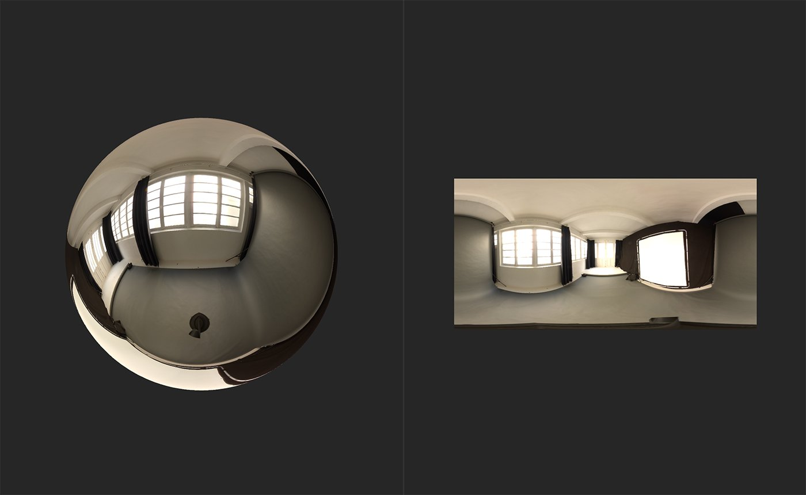
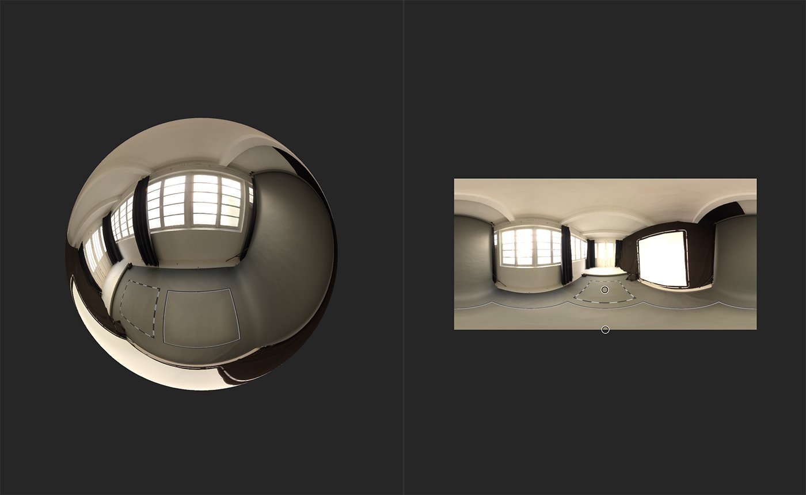

In: HDRI Tools
Patch the nadir of your environment light to hide artifacts or seams.
In the images below, you can see how Nadir Patch is used to remove the camera stand in this panoramic image.


Basic parameters
A common issue that an occur when creating an environment light from photographs is artifacts occurring around the top and bottom nadirs of the texture. The Nadir Patch filter helps to minimize these issues.